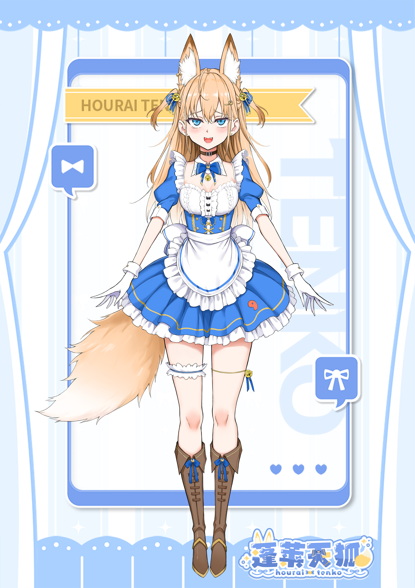
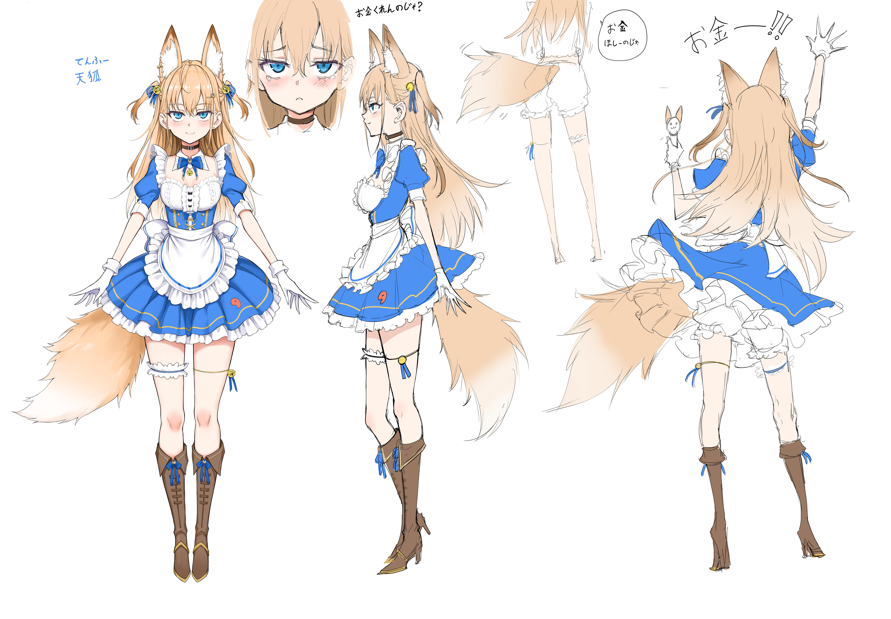

Hourai Tenko · 虚拟 UP 主
蓬莱天狐
努力还债的宅女天狐大人——不是橘猫，是狐娘！
蓬莱天狐（蓬莱 天狐 / Hourai Tenko）是 B 站账号 蓬莱天狐_official 使用的虚拟形象，主要在 bilibili 直播。 形象由漫画家 局长きょくちょ 设计，设定为「局长的女儿」。 自 2025 年 8 月起在 B 站固定开播。
01简介
以直播为主，也会把直播片段剪成短视频投稿。常见内容有杂谈、游戏、晨间播、3D 麦、歌回、女仆剧情演绎等。
直播里经常出现「被教育」「女仆」一类标题，和局长作品《女仆教育》的路子相近。 2025 年 8—9 月，局长本人进过直播间，做过好几场「局长亲手教育的天狐大人登场」联动。
频道签名里写：努力还债、买本子游戏音声周边的宅女天狐大人；不是橘猫； 喜欢ご主人和美少女；最爱的妈咪是 @局长きょくちょ。
签名原文
02设定
狐娘女仆，局长きょくちょ 的原创角色。 2024 年 11 月局长发布过招募视频；现任主播自 2025 年 8 月起用这个账号直播。
- 局长的女儿 — 设定与直播里都会这么叫。
- 宅女、还债 — 爱买同人志、Gal、音声，签名老说在还债。
- 女仆、被教育 — 常穿女仆装；「被局长教育」是固定节目名。
- 不是橘猫 — 签名和直播里反复提，已成梗。
- ご主人 — 对观众的称呼。
- お金くれんのじゃ？ — 设定稿里的口头禅，和爱买周边、总喊「还债」的人设一致。
03形象
局长绘制的标准造型：浅金 / 橙金长发、齐刘海，发侧系蓝缎带并挂金铃； 狐耳、蓝瞳，身后是大狐尾（尾尖发白）；穿蓝白女仆装，白手套、铃铛、棕色系带长靴，大腿有袜圈装饰。


04活动
直播与投稿
- 杂谈 — 二次元日常、买周边、整活。
- 游戏 — 《魔塔》《啊。啊。啊。》、鸣潮（含边缘行者联动剧情）等。
- 晨间播 — 运动、健康器具一类早间场。
- 3D 麦 / 音声 — 3Dio 麦、低音系切片；2026 年 5 月做过 3D 麦小道具首秀。
- 歌回 / 翻唱 — 如《MOTTAI 再多喜欢天狐一点吧♡》。
- 女仆演绎 — 女仆主题剧情回。
- 局长联动 — 「局长亲手教育的天狐大人」系列（2025 年 8—9 月）。
- 联动 — 如 2026 年 6 月 VirtualBridge 六一活动。
纪念直播
| 2025-09-10 | 满月回「被教育满一个月的天狐大人」（BV1hdHXz3En8） |
|---|---|
| 2025-10-05 | 生日回「第一次过生日也要被教育吗！？」（BV1JVxgzyE3L） |
| 2025-10-12 | 生日后日谈，开箱礼物（BV1dX4GzUERo） |
| 2025-11-04 | 百日回「与你相遇的第100天」（BV1WR17BzEza） |
回放多为粉丝存档号上传，不是官方号投稿。
05代表投稿
官方账号 蓬莱天狐_official 的部分投稿：
| 日期 | 标题 | 链接 |
|---|---|---|
| 2026-06-27 | 【3Dio麦】来听下低音系的《啊。啊。啊》吧 | BV1es7n6bETP |
| 2026-06-13 | 连 DLsite 用户都觉得直白的女人 | BV1rjJj6NEZj |
| 2026-06-06 | 【2026 高考应援】女仆陪睡鼓励【中文音声】 | BV1pz7D68EuV |
| 2026-03-08 | 倒数十秒…（音声整活） | BV1C7Nuz8EBp |
| 2025-12-18 | 【补】哦齁齁齁齁~♡不会唱歌只会战吼 | BV13cqpBrEJE |
| 2025-10-05 | 【翻唱/PV付】MOTTAI 再多喜欢天狐一点吧♡ | BV1U8xbz1EaW |
| 2025-09-14 | 狠狠地查学历查避税！？ | BV1aeHkz1ER3 |
06个人活动历程
2024 年
| 11 月 23 日 | 局长发布招募视频「来成为闪亮的天狐吧！」。 |
|---|
2025 年
| 8 月 9 日 | 局长联动「局长亲手教育的天狐大人登场」（BV1tgbAzLEEo）。 |
|---|---|
| 8—9 月 | 继续多场局长「教育」联动（8/11、8/25、8/30、9/6 等）。 |
| 9 月 10 日 | 满月回。 |
| 9 月 14 日 | 投稿「狠狠地查学历查避税！？」。 |
| 10 月 5 日 | 生日回；同日发翻唱 MOTTAI（BV1U8xbz1EaW）。 |
| 10 月 12 日 | 生日后日谈，开箱礼物。 |
| 11 月 4 日 | 百日回。 |
| 12 月 18 日 | 投稿「哦齁齁齁齁~♡不会唱歌只会战吼」（BV13cqpBrEJE）。 |
2026 年
| 1 月 | 晨间播，运动 / 健康器具主题。 |
|---|---|
| 3 月 15 日 | 羞耻台词回。 |
| 5 月 10 日 | 3D 麦小道具首秀，同场还有《魔塔》（BV1GC5H6WEbH）。 |
| 5—6 月 | 开始播鸣潮，过边缘行者联动剧情。 |
| 6 月 1 日 | VirtualBridge 六一联动。 |
| 6 月 22 日 | 端午节新衣回。 |
07轶事
- 不是橘猫 — 签名固定句，观众也爱接梗。
- 局长的女儿 — 联动和切片标题里常出现。
- 被教育 — 直播常用词；房规写不许观众「过度教育主播」，只有局长能教育她，这本身也是梗。
- 狐今色？ — 粉丝做的切片系列名，不是官方投稿。
- 3D 麦 — 2026 年 5 月起用 3Dio 麦和小道具，相关切片和官方投稿不少。
08外部链接
虚拟UP主 个人势 狐娘 女仆